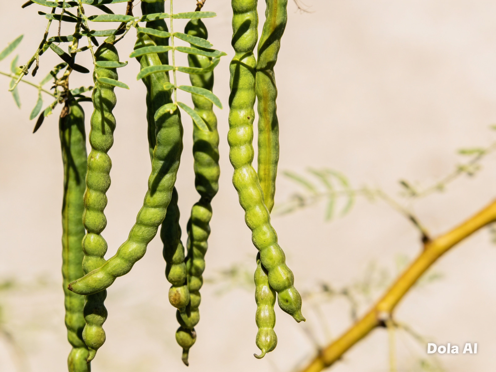
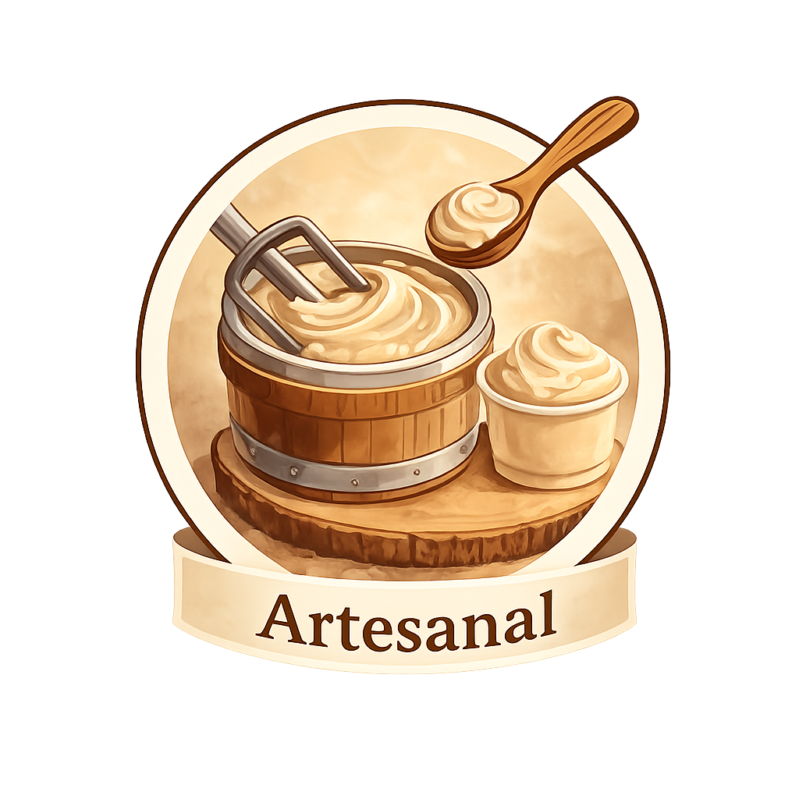

!Descubre de que estamos hechos¡



Propiedades de nuestros ingerdientes
Mezquite
- Tiene bajo índice glucémico (~25 aprox.)
- Libera glucosa lentamente
- Ayuda a evitar picos de azúcar en sangre
- Es uno de los mejores sustitutos naturales del azúcar
Dulzor natural y beneficios nutricionales que conectan con la tierra.
Níspero
- Aporta fibra → ralentiza absorción de azúcar
- Puede ayudar a controlar niveles de glucosa (leve)
- Frescura cítrica y antioxidantes que aportan sabor y bienestar
- Alto en vitamina A y C
- Refuerza el sistema inmune
- Ayuda a la salud de la piel y vista
- Contiene antioxidantes
El níspero es un fruto fresco y nutritivo que aporta bienestar y sabor natural.
Garantía de Calidad
Ingredientes Reales
Ingredientes naturales sin azúcares añadidos, seleccionados con cuidado.

Artesanal
Comprometidos con procesos tradicionales y el sabor auténtico.
Sostenible
Promovemos el consumo responsable y el respeto por la naturaleza.